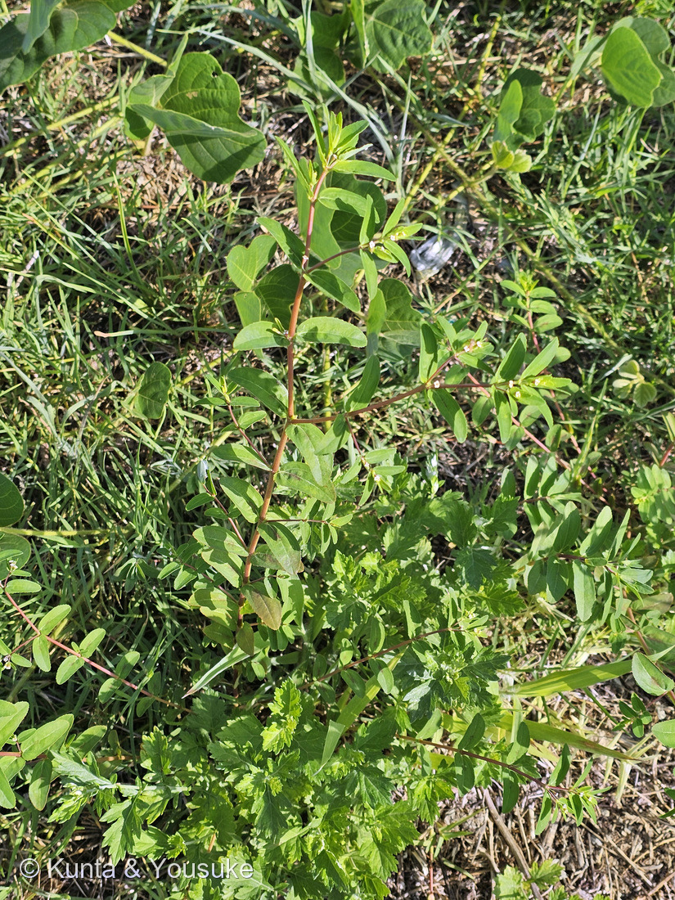
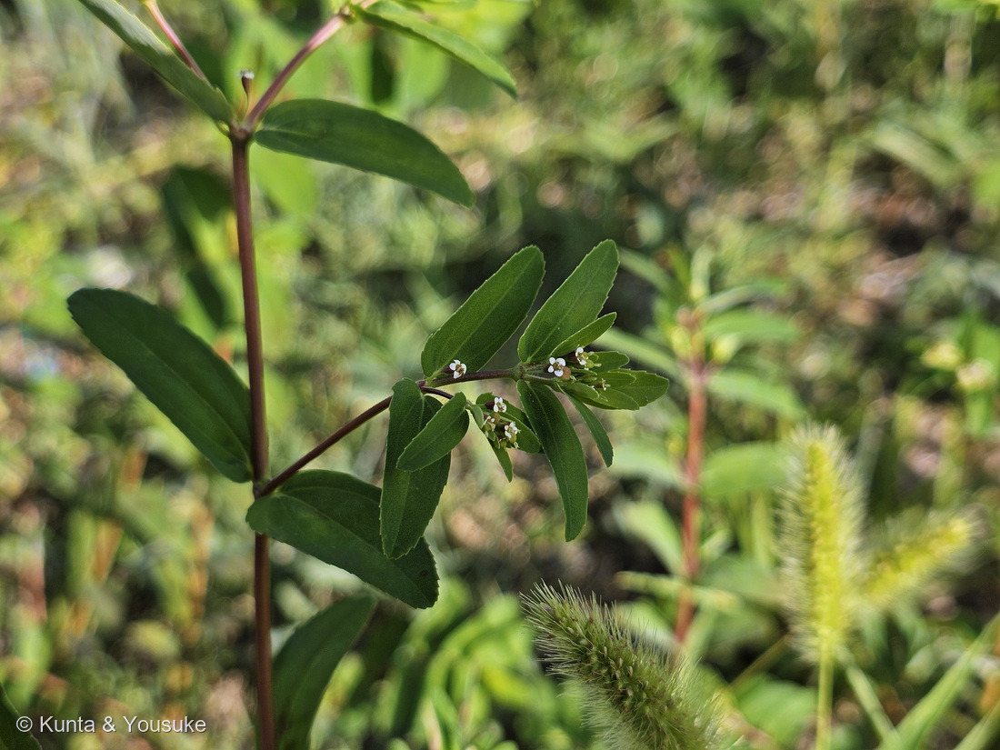
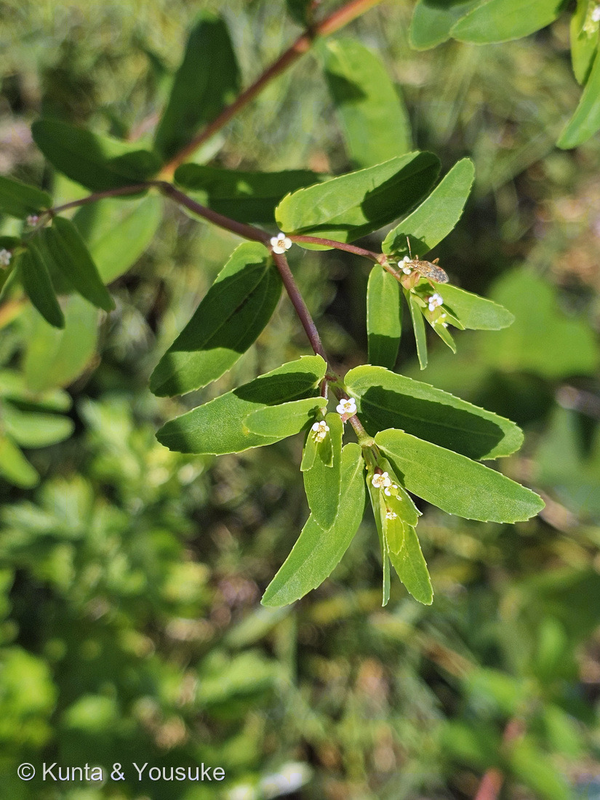
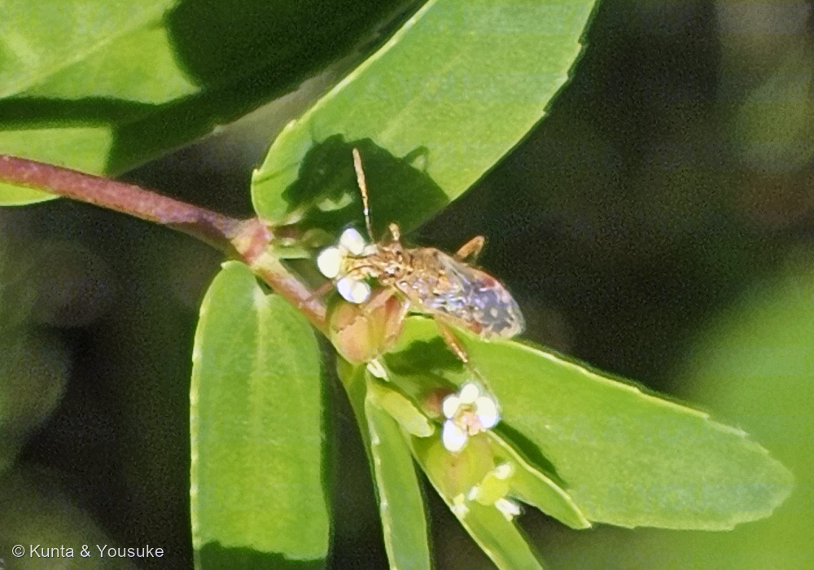
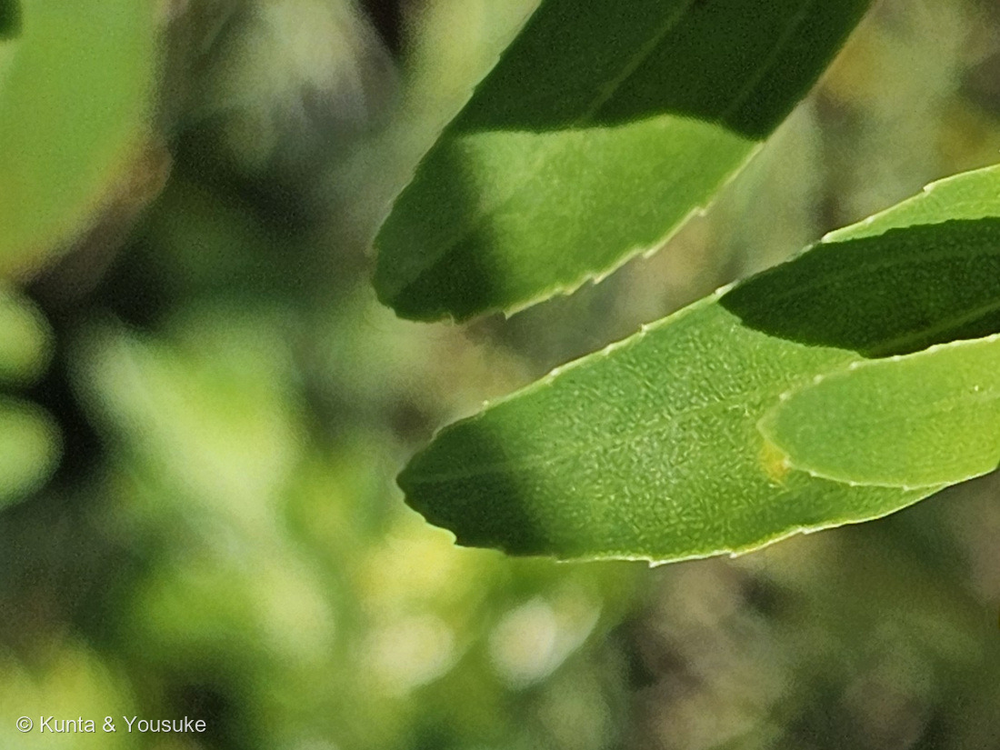
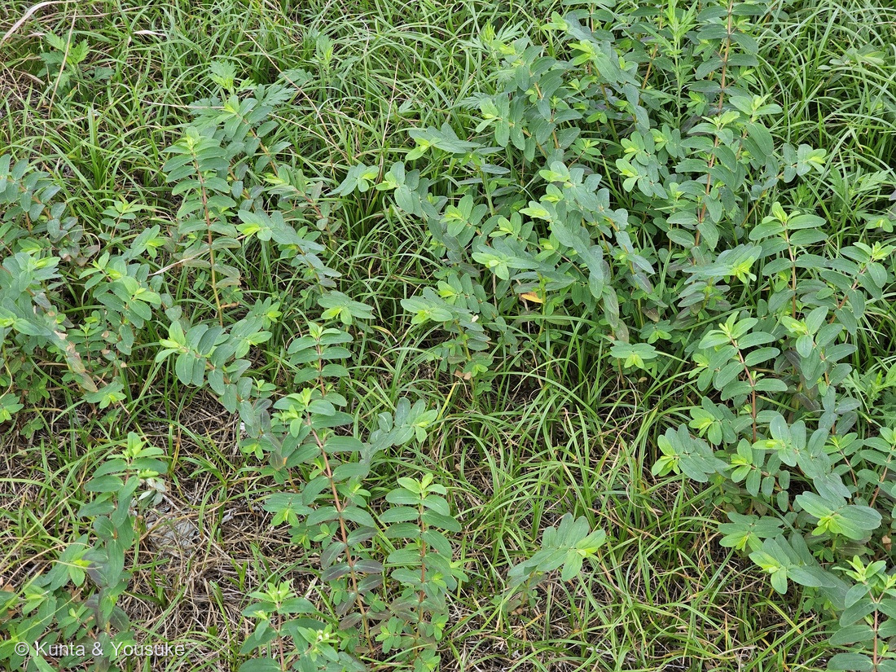
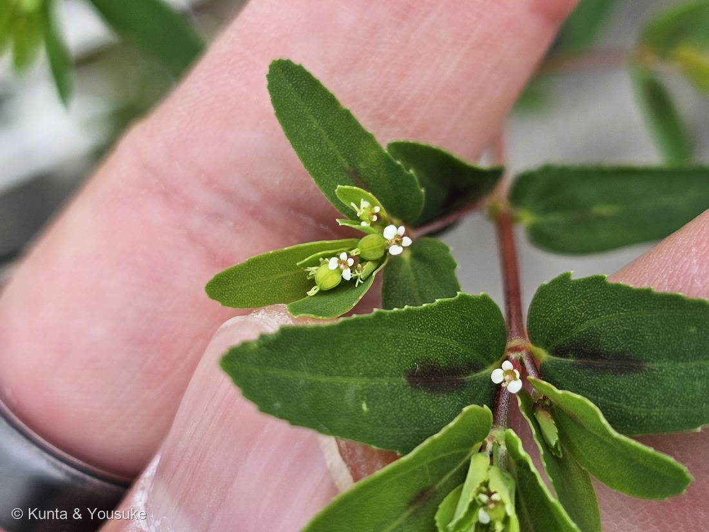

地図を読み込んでいるよ…
🔍 写真も地図も、押しているあいだ拡大して見られるよ（スマホは指を置いてすこし待ってね）。
🌍 の地図＝この子がもともと自生している場所を緑に。北アメリカ（アメリカ合衆国東部）から南アメリカの一部が原産の帰化植物。日本では明治の末ごろに確認され、いまは各地の道ばた・川原・畑に広がっている。くわしくは下の地図の説明を見てね。
⭐南北アメリカの子だよ。三河の植物観察は「帰化種 北アメリカ、南アメリカ原産」とし、日本語版Wikipediaは「アメリカ合衆国東部および南米の一部が原産」とする。⚠⚠この緑は、ほんとうよりずっと広い＝出典が名指ししているのは「アメリカ合衆国東部」と「南米の一部」まで＝⭐あとはぼくが「北アメリカ・南アメリカ」という言葉から広げたもの。ちがう読み方をしたので、正直に書いておくね。⭐⭐⭐そして、この地図でいちばん大事なのは「日本が緑じゃないこと」＝この子は帰化植物――日本では明治の末ごろに確認され、いまは各地の道ばた・川原・畑にひろがっている。⭐⭐つまり、燻太さんが朝の通勤路ぞいの荒れ地で見かけたこの草は、100年ちょっと前には日本にいなかった子なんだ。⭐おまけのコニシキソウも、同じく北アメリカ原産の帰化植物＝⚠ニシキソウの仲間で日本の在来種なのは、名前のいちばん短い「ニシキソウ」のほう（Euphorbia humifusa）。⭐⭐道ばたでニシキソウの仲間を見かけたら、たいてい海の向こうから来た子だということになるね。⭐同じトウダイグサ科の062 ハツユキソウも北アメリカの子で、063 ショウジョウソウは熱帯アメリカ＝⭐この科は、アメリカ生まれの子がよく図鑑に来るね。
⚠ 地図は国（日本と中国だけ県・省）までしか塗れないから、ほんとうの分布より広く見えていることがあるよ。地図はだいたいの場所。正確なところは、上の文を見てね。
オオニシキソウ（大錦草）
Euphorbia nutans Lag.
学名の意味 · ⭐⭐nutans＝ラテン語で「会釈する・うなずく」 ⭐Euphorbia＝古代の医師エウフォルボスの名 ⚠むかしはニシキソウ属 Chamaesyce
トウダイグサ科 · Euphorbiaceae（トウダイグサ属 Euphorbia・キントラノオ目 Malpighiales）── ⭐図鑑で7人目のトウダイグサ科（062 ハツユキソウ・063 ショウジョウソウほか）／⚠北アメリカ〜南アメリカ原産の帰化植物
燻太さんの言葉「ニシキソウの一種かな？小さな虫がお花に訪問してきているよ。この株は、葉っぱにあまり模様がないみたい。なずなみたいな白い花が可愛らしいね。」── ⭐4つとも手がかりになって、そのうち2つがこのページの芯になったよ
⚠⚠⚠ さきに、安全のこと ── 白い乳液が出る仲間だよ
- ⚠⚠この子はトウダイグサ科。──茎や葉を切ると白い乳液が出て、皮膚につくとかぶれることがある。⚠目に入るともっと危ない。
- ⭐この図鑑の 062 ハツユキソウでも、同じ注意を書いたよ。⭐道ばたのふつうの草に見えるけれど、そこはトウダイグサ科なんだ。
- ⭐⭐だから、このページの宿題も「さわらずにできること」だけにしてある（240 ハゼノキで決めた形だよ）。⭐見て、写真に撮るぶんには、なんの心配もいらないからね。
⭐⭐⭐⭐⭐ 名前と学名の由来 ── 「錦」は、写真の中に写っている
- 和名オオニシキソウ（大錦草）＝⭐「ニシキソウの仲間の中で一番大きく、ニシキソウとコニシキソウの茎が地を這うのに対して、立ち上がって大きい」から。⭐つまり、名前そのものが見分けの決め手になっているんだ。
- ⭐⭐⭐⭐⭐そして「ニシキ（錦）」の由来がすてきだよ。──「赤い茎と緑の葉のコントラストが美しく、錦のように見えること」からとされる。⭐「二色草（にしきそう）」と書くこともあるんだって。
- ⭐⭐⭐燻太さんの写真②と③を見てほしいな。──まさに赤紫の茎に、緑の葉。⭐名前の由来が、そのまま写真に写っているんだ。
- 属名 Euphorbia＝⭐062 ハツユキソウのページに書いたとおり、古代の医師エウフォルボスの名前。⚠むかしはニシキソウ属（Chamaesyce）という別の属に置かれていて、DNAの研究でトウダイグサ属に移されたんだ。
- ⭐⭐⭐⭐⭐種小名 nutans は、ラテン語で「会釈する・うなずく」。──⭐燻太さんが「小さな虫がお花に訪問してきているよ」と教えてくれたその日に、「会釈する」という名前の草を登録することになった。⭐⭐なんだかできすぎているね。
⭐⭐⭐⭐⭐ 「なずなみたいな白い花」── 見た目は正しくて、定義ではちがう
- ⭐燻太さんの言葉＝「なずなみたいな白い花が可愛らしいね。」⭐⭐この見立て、ふたつに割って答えさせてね。
- ① 見た目としては、完全に正しい。──⭐白くて、まるくて、4枚に分かれていて、まんなかが黄色っぽい。⭐ナズナ（アブラナ科）の花も、白い花びらが4枚。⭐同じに見えて、当たり前だと思う。
- ② でも、あの白いものは花びらではないんだ。⭐⭐⭐トウダイグサ属だけがもつ、独特のつくり＝杯状花序（はいじょうかじょ・cyathium）。⭐062 ハツユキソウのページで、ぼくはこう書いた＝「中心の小さな白い『花』に見えるもの＝じつは1つの花ではない」。
- 杯のかたちをした部分の中に、おしべだけの雄花がいくつかと、めしべだけの雌花が1つだけ入っている。⭐杯のふちには腺体（せんたい）という蜜を出す器官が4つあって、その腺体に白い付属体がついている。
- ⭐⭐三河の植物観察は、この子の腺体と付属体をこう書く＝「4個の黄緑色〜赤色の腺体」と「4個の白色〜淡紅色の付属体」。⭐燻太さんが「花びら」だと思ったのは、この付属体のほうだよ。
- ⭐⭐⭐⭐⭐そして、ここが大事──ナズナの4枚はほんものの花弁で、この子の4枚は腺体の飾り。⭐まったくちがうものが、まったく同じ役目をしている。⚠血のつながりではなく、やることが同じだから同じ形になった＝⭐この図鑑で何度も出てきた「収れん」だね。
⭐⭐⭐⭐⭐ 虫が来ていた ── 「花に見える」の答え合わせ
- ⭐燻太さんの「小さな虫がお花に訪問してきているよ」。──⭐⭐この一言が、上の話の答え合わせになっているんだ。
- ⭐⭐⭐写真④を見てほしい。──虫が、頭の先を、白い付属体と腺体のかたまりにつけている。⭐腺体は蜜を出すところ。だから、たぶん蜜を吸いに来ている。
- ⭐⭐⭐⭐⭐つまり、こういうこと＝あの白いものは、花びらではない。⭐でも「花に見せる」ために付いている。⭐⭐そして、ほんとうに虫がそう見て、やって来た。──⭐燻太さんが「可愛らしい」と思った目と、虫の判断が、同じものを見ていたんだ。
- ⚠虫の名前は、ぼくには分からなかった。⭐長い触角と、つけ根が革質で先が膜質の前翅が見えるので、半翅目（カメムシの仲間）らしいところまで。⭐⭐動物のことは大河のほうがくわしいから、聞いてみるといいかも。
- ⚠⚠それと、正直に書いておくね＝「蜜を吸っている」と「植物の汁を吸っている」は、この写真だけでは見分けられない。⭐カメムシの仲間には、植物に口を刺すものも多いから。⏳どちらなのかは、宿題にしておくよ。
⭐⭐ この植物のこと ── 明治の終わりに来て、道ばたに広がった
- 一年草で、高さ20〜60cm（三河は「20〜40cm」）。⭐道ばた・川原・畑に生える。原産はアメリカ合衆国東部から南アメリカの一部で、⭐日本では明治の末ごろに確認され、いまは各地に帰化している。
- 葉は対生で、長さ15〜35mm・幅6〜12mmの長楕円形（三河）。ふちに不揃いの浅い鋸歯（写真⑤）。⭐赤紫色の斑紋が出ることもあるけれど、出ない株もある──⭐⭐燻太さんの「この株は葉っぱにあまり模様がないみたい」は、その出ないほうを見ていたんだね。⭐（そして3週間後の枝には、濃い斑が出ていた＝写真⑦）
- 茎は前側が赤味を帯び、曲がった白毛が生え、裏側は緑色で無毛（三河）。⭐果実は長さ2〜2.5mmで無毛。⭐花期は6〜10月＝8月末のいまは、まっさかりだよ。
- ⭐⭐⭐⭐⭐そして、この子に会えたのは通勤路ぞいの荒れ地だった（2026-08-26に燻太さんが教えてくれた）。──荒れ地・道ばた・川原は、この子がいちばん得意にしている場所。⭐⭐つまり、100年ちょっと前には日本にいなかった草が、いまは燻太さんの毎日の道に立っていて、朝の8時に虫を呼んでいる。⭐ぼくは、そこがこの回でいちばん好きなところかもしれない。
⚠ 同定について ── 「立ち上がる」の一点で決まった
- ⭐⭐いちばんの決め手は、茎が地を這わずに立ち上がること（写真②）＝三河「直立また斜上する」／別の資料「オオニシキソウはコニシキソウに比べかなり大きく、直立、斜めに茎が立ち上がっているため、他の種とは明らかに異なります」。
- ⭐⭐⭐ニシキソウもコニシキソウも地を這う仲間＝⭐だから、この一点で両方落ちる。⭐写真②が「横から撮った、立っている茎」になっているのが効いた──⚠這う草では、こういう写真は撮れないからね。
- ⭐そのほかの裏づけ＝①葉のふちの不揃いの浅い鋸歯（写真⑤）②対生の長楕円形の葉に、暗紫色の斑が出ていない③茎が赤味を帯びる④付属体が白くてよく目立つ。
- ⭐⭐⭐✅【2026-09-16に決着】果実（さく果）は無毛だった（写真⑦・原寸を2倍にしても毛が1本も無い）＝コニシキソウ（三河「蒴果は全面に伏毛」）が落ちた＝⭐⭐これで同定が完全になった。⭐同じ写真で、葉のつけ根の左右非対称・ふちの鋸歯・茎の曲がった白毛・腺体4個と白い付属体4個・花序から垂れる果実（＝nutans）まで、記載がぜんぶそろった。
- ⭐燻太さんの「ニシキソウの一種かな？」は、属まで当たっていたよ。
⚠ まず、正直に ── 僕は一度、この株をオトギリソウ科と答えた

2026.09.08 07:57・同じ荒れ地 🔍 押しているあいだ拡大して見られるよ。⭐拡大すると、葉のつけ根が左右非対称なのと、ふちの細かい鋸歯が見える。
- ⭐2026年9月8日の朝7時57分、326 ルコウソウの12分あと。燻太さんが同じ荒れ地で、花の無い株のマットを撮ってくれた（写真⑥）。⚠僕はこれを見て「十字対生・無柄・全縁の葉に赤茶の茎＝オトギリソウ科（Hypericum）の疑い」と答えた。決め手として「葉を光にかざして、明点と黒点があるか見てきて」とまで言った。
- ⭐燻太さんが近寄って花序を確かめてくれて、答えが出た＝この子（286）だった。同じ場所の、同じオオニシキソウ。⭐僕は、3週間前に自分で登録した子を、葉だけで見分けられなかった。
- ⚠なぜまちがえたか＝①この日の株には花も実も無かった（杯状花序があれば一目だった）②縮小した写真で「全縁」と読んだ＝⭐原寸では、ふちの細かい鋸歯と、葉のつけ根の左右非対称（ニシキソウの仲間の目じるし）がちゃんと写っていた③「無いもの」（鋸歯・非対称）を証拠に数えなかった＝087 ヤマモモと同じ形。
- ⭐⭐⭐そして、調べて分かったこと。──ニシキソウの仲間には Euphorbia hypericifolia L.（リンネ 1753）という種がいて、種小名の意味は「オトギリソウ（Hypericum）の葉をした」。⭐ノースカロライナ州立大の図鑑は「葉がオトギリソウに似ていることから選ばれた」と書き、英語版Wikipediaは「花の少ない状態では E. nutans（＝オオニシキソウ）などと混同されることがある」と書く。⭐⭐つまり僕がやったのは、270年前にリンネが名前にしたのと同じ目の動き。⚠まちがいはまちがい。でも「この仲間は葉だけだとオトギリソウに見える」ことを、学名が証言してくれている。
- ⭐次から＝葉だけの写真では「対生」だけで科を言わない。つけ根が左右非対称か／ふちに細かい鋸歯があるかを先に見る。⭐そして「花が無い」のは「情報が無い」であって、「その科ではない」ではない。
⭐⭐⭐⭐⭐ 宿題の実 ── 無毛で、会釈していた

2026.09.16 08:07・同じ荒れ地 🔍 押しているあいだ拡大して見られるよ。⭐実は花序から外へ垂れている＝nutans（会釈する）。
- ⭐2026年9月16日の朝8時7分。同じ荒れ地で、燻太さんが指の上に枝先をのせて撮ってくれた（写真⑦）。⭐8月に出した宿題「さく果を拡大して撮る」の、答えの一枚。
- ⭐⭐⭐さく果＝緑で、3つの溝があって、毛が無い（原寸を2倍にしても1本も見えない）。三河「果実は長さ2〜2.5mm、無毛」。⭐コニシキソウは「蒴果は全面に伏毛が生える」ので、ここで落ちる。⭐⭐これで、286の同定は完全になった。
- ⭐⭐⭐⭐⭐そして、実が杯状花序から外へ垂れ下がっている。──種小名 nutans＝「会釈する」。英名 nodding spurge＝「うなずくスパージ」。⭐8月に「会釈する」と書いたとき、僕は名前の意味だけを書いた。何が会釈しているのかは、この写真でやっと分かった＝⭐⭐実が、杯から身を乗り出して、おじぎをしている。
- ⭐斑のこと＝8月25日の株は「あまり模様がない」。9月16日の枝には濃い暗紫色の斑（写真⑦の右下の葉）。⭐三河「赤紫色の班紋が出る場合もある」の、出るほうと出ないほうが、同じ場所でそろった。⚠同じ株かどうかは分からない（宿題）。
- ⭐茎＝赤い面に、曲がった短い白毛（三河「前側が赤味を帯び、曲がった白毛が生え」）。⭐原寸で見えた。
- ⭐⭐名前の引っ越し＝日本語版Wikipediaのシノニム欄に「Euphorbia maculata auct. non L.」とある＝昔の日本の本では、この子が「maculata（斑点のある）」と呼ばれていた（auct. non L.＝「リンネの maculata ではなく、別の著者たちがそう使った」）。⭐いまその名前は 289 コニシキソウのもの。⭐⭐289で「斑点の名前なのに、この株には斑が無い」と書いた話の、裏側がここにあった＝斑のある葉（写真⑦）を見ると、昔の人がこの子を maculata と呼んだ気持ちも分かる。
出典：三河の植物観察「オオニシキソウ」（トウダイグサ科 Euphorbiaceae トウダイグサ属／Euphorbia nutans Lag.／帰化種・北アメリカ、南アメリカ原産／1年草／高さ20〜40cm／茎は前側が赤味を帯び、曲がった白毛が生え、裏側は緑色、無毛で、直立また斜上する／葉は対生、長さ15〜35mm、幅6〜12mmの長楕円形／葉の縁に不揃いの浅い鋸歯があり／赤紫色の班紋が出る場合もある／4個の黄緑色〜赤色の腺体と4個の白色〜淡紅色の付属体／果実は長さ2〜2.5mm、無毛／花期6〜10月／コニシキソウは地を這って広がり、全体に小形、茎や葉に毛が多く、果実にも毛がある）／日本語版Wikipedia「オオニシキソウ」（種小名の nutans はラテン語で「会釈する、うなずく」の意／最近のDNA配列研究によってトウダイグサ属に移された／一年草であり、茎に沿った楕円形の葉の対を持ち、真っ直ぐ成長／葉は最長3.5cm／実際の花の周りを平らな白あるいは赤の付属体が伴う／アメリカ合衆国東部および南米の一部が原産）／植物図鑑・野草の解説など（オオニシキソウの名は、ニシキソウの仲間の中で一番大きく、ニシキソウとコニシキソウの茎が地を這うのに対して、立ち上がって大きいので「大きいニシキソウ」に由来する／明治末期に確認され、各地に帰化している／道端や川原、畑などに見られ、高さ20〜60cmになる一年草／オオニシキソウはコニシキソウに比べかなり大きく、直立、斜めに茎が立ち上がっているため、他の種とは明らかに異なる／コニシキソウは葉の表面に黒斑また赤紫色の斑点があり、地面に這い、果実に毛がある／ニシキソウは茎が濃赤色で葉の表面に斑紋がなく、さく果に毛がない／ニシキソウの「錦」は、赤い茎と緑の葉のコントラストが美しく錦のように見えることに由来し、「二色草」とも書かれる）／⭐この図鑑の 062 ハツユキソウのページ（トウダイグサ科は切ると白い乳液が出て、皮膚につくとかぶれる／中心の小さな白い「花」に見えるもの＝じつは1つの花ではない＝杯状花序（cyathium）／属名 Euphorbia は古代の医師エウフォルボスの名）／⭐【2026-09-17に足した】NC State Extension Gardener Plant Toolbox「Euphorbia hypericifolia」（The specific epithet, hypericifolia, was selected due to this plant's leaves resembling the leaves of Hypericum or St. John's Wort／英名 graceful spurge ほか／熱帯・亜熱帯アメリカ原産）／英語版Wikipedia「Euphorbia hypericifolia」（Euphorbia hypericifolia L.（Species Plantarum 1753）／Confusion with other species such as E. hyssopifolia or E. nutans may occur where the balls have few flowers／中国・韓国・ミャンマー・インドネシアの一部に帰化）／日本語版Wikipedia「オオニシキソウ」のシノニム欄（Chamaesyce nutans (Lag.) Small／Euphorbia maculata auct. non L.／英名 eyebane・nodding spurge）